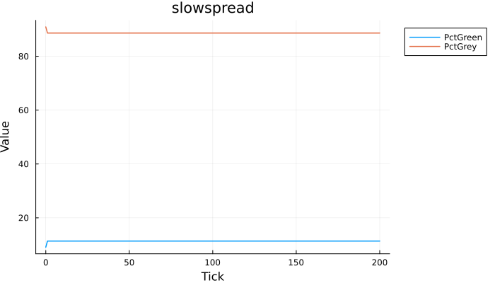
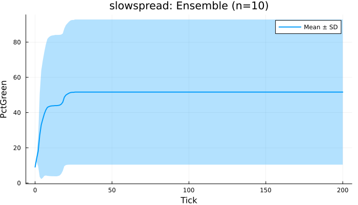
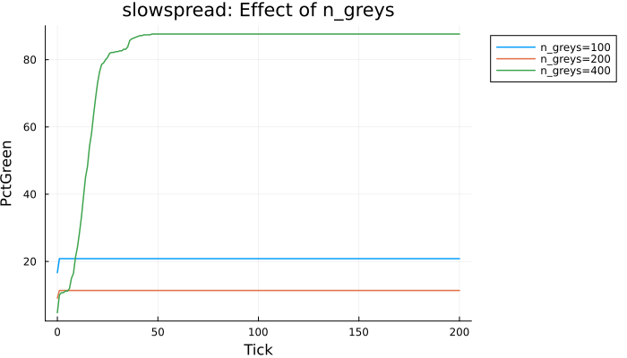

Slow Spread Env Action
Overview
This vignette demonstrates the Slow Spread Env Action model implemented in ArkModelZoo.jl using the Ark.jl ECS framework.
Parameters
| Parameter | Type | Default | Description |
|---|---|---|---|
n_greys | Int | 200 | n greys |
n_greens | Int | 20 | n greens |
k_degree | Int | 6 | k degree |
group_openness | Float64 | 0.05 | group openness |
prop_hard | Float64 | 0.1 | prop hard |
activation_threshold | Float64 | 0.75 | activation threshold |
threshold_strong | Int | 5 | threshold strong |
moving | Bool | true | moving |
strong_ties | Bool | true | strong ties |
countervailing_contagion | Bool | true | countervailing contagion |
hub_weak | Bool | true | hub weak |
max_ticks | Int | 200 | max ticks |
Source Code
The Julia code to run this model:
using ArkModelZoo
_, trajectory = run_slowspread()Time Series

Ensemble Runs
Ten replicates with different random seeds, showing mean ± standard deviation.

Parameter Sensitivity
Varying n_greys.

Appendix: Source Code
This model is implemented in the Ark.jl Entity-Component-System (ECS) framework. The code is split into five files, each with a distinct role:
- Parameters: a mutable struct holding all configurable values.
- Components: lightweight data types attached to individual entities (agents).
- Resources: world-level shared state accessible to all systems.
- Systems: functions that operate on entities each tick, defining model behavior.
- Model: wiring that assembles the world, registers resources and systems, and provides the run entry point.
Parameters (parameters.jl)
The parameter struct uses @kwdef so that every field has a default value and can be overridden by keyword. These defaults match the original NetLogo model’s slider settings.
Base.@kwdef mutable struct SSpreadParams
n_greys::Int = 200
n_greens::Int = 20
k_degree::Int = 6
group_openness::Float64 = 0.05
prop_hard::Float64 = 0.1
activation_threshold::Float64 = 0.75
threshold_strong::Int = 5
moving::Bool = true
strong_ties::Bool = true
countervailing_contagion::Bool = true
hub_weak::Bool = true
max_ticks::Int = 200
seed::Int = 42
endComponents (components.jl)
Components are lightweight data types attached to individual entities (agents). Mutable structs hold per-entity state, while empty tag structs act as markers for the ECS query system to efficiently filter entities.
struct SSpreadDummy endResources (resources.jl)
Resources are world-level singletons shared across all systems, used for global state and aggregate statistics.
mutable struct SSpreadNetwork
n_agents::Int
color::Vector{Int} # 0 = grey, 1 = green
hardliner::Vector{Bool}
community::Vector{Int} # community label from Louvain detection
adj::Vector{Set{Int}}
weight::Vector{Dict{Int,Int}} # edge weights: agent → neighbor → weight
degree::Vector{Int}
end
function SSpreadNetwork()
SSpreadNetwork(0, Int[], Bool[], Int[], Set{Int}[], Dict{Int,Int}[], Int[])
end
function _sspread_add_agent!(net::SSpreadNetwork, color::Int)
push!(net.color, color)
push!(net.hardliner, false)
push!(net.community, 0)
push!(net.adj, Set{Int}())
push!(net.weight, Dict{Int,Int}())
push!(net.degree, 0)
net.n_agents += 1
return net.n_agents
end
function _sspread_add_edge!(net::SSpreadNetwork, i::Int, j::Int, w::Int=1)
if j ∉ net.adj[i]
push!(net.adj[i], j)
push!(net.adj[j], i)
net.degree[i] += 1
net.degree[j] += 1
net.weight[i][j] = w
net.weight[j][i] = w
end
# NetLogo's create-link-with silently ignores existing links (no weight update)
end
function _sspread_remove_edge!(net::SSpreadNetwork, i::Int, j::Int)
if j ∈ net.adj[i]
delete!(net.adj[i], j)
delete!(net.adj[j], i)
delete!(net.weight[i], j)
delete!(net.weight[j], i)
net.degree[i] -= 1
net.degree[j] -= 1
end
end
mutable struct SSpreadStats
pct_green::Float64
pct_grey::Float64
end
SSpreadStats() = SSpreadStats(0.0, 0.0)Systems (systems.jl)
Systems contain the model logic and execute in a defined order each tick. Each system struct implements either initialize! (run once at setup) or update! (run every tick).
# Slow Spread of Environmental Action — opinion dynamics with community structure
struct InitSSpreadSystem <: System end
function _sspread_build_ba!(net::SSpreadNetwork, rng, start_id::Int, n::Int, m::Int, color::Int)
ids = Int[]
# Create m+1 initial fully connected nodes
for _ in 1:(m+1)
id = _sspread_add_agent!(net, color)
push!(ids, id)
end
for i in 1:length(ids), j in (i+1):length(ids)
_sspread_add_edge!(net, ids[i], ids[j])
end
# Preferential attachment for remaining
for _ in (m+2):n
new_id = _sspread_add_agent!(net, color)
push!(ids, new_id)
# Degree sum among existing nodes in this sub-network
total_deg = 0
for id in ids[1:end-1]
total_deg += net.degree[id]
end
targets = Set{Int}()
attempts = 0
while length(targets) < m && attempts < 10000
attempts += 1
if total_deg == 0
# Uniform random
push!(targets, ids[rand(rng, 1:length(ids)-1)])
else
r = rand(rng) * total_deg
cumulative = 0.0
for id in ids[1:end-1]
cumulative += net.degree[id]
if cumulative >= r
push!(targets, id)
break
end
end
end
end
for t in targets
_sspread_add_edge!(net, new_id, t)
end
end
return ids
end
# Louvain community detection (matches NetLogo nw:louvain-communities)
function _sspread_louvain!(net::SSpreadNetwork, rng; max_passes::Int=100)
n = net.n_agents
n <= 1 && return
total_edges = 0
for i in 1:n
total_edges += net.degree[i]
end
m = total_edges ÷ 2 # each edge counted twice in degree sum
m == 0 && return
mf = Float64(m)
comm = collect(1:n)
for _ in 1:max_passes
moved = false
order = shuffle!(rng, collect(1:n))
for i in order
ci = comm[i]
ki = net.degree[i]
isempty(net.adj[i]) && continue
# Edges from i to each neighboring community
ki_to = Dict{Int,Int}()
for j in net.adj[i]
cj = comm[j]
ki_to[cj] = get(ki_to, cj, 0) + 1
end
# Total degree of each relevant community
sigma_tot = Dict{Int,Int}()
for j in 1:n
cj = comm[j]
if cj == ci || haskey(ki_to, cj)
sigma_tot[cj] = get(sigma_tot, cj, 0) + net.degree[j]
end
end
ki_in_ci = get(ki_to, ci, 0)
sigma_ci = get(sigma_tot, ci, 0)
best_c = ci
best_dq = 0.0
for (c, ki_in_c) in ki_to
c == ci && continue
sigma_c = get(sigma_tot, c, 0)
dq = (ki_in_c - ki_in_ci) / mf +
ki * ((sigma_ci - ki) - sigma_c) / (2.0 * mf * mf)
if dq > best_dq
best_dq = dq
best_c = c
end
end
if best_c != ci
comm[i] = best_c
moved = true
end
end
!moved && break
end
for i in 1:n
net.community[i] = comm[i]
end
end
function initialize!(::InitSSpreadSystem, world::World)
params = get_resource(world, SSpreadParams)
rng = get_resource(world, RNGResource).rng
net = get_resource(world, SSpreadNetwork)
stats = get_resource(world, SSpreadStats)
# NetLogo passes k-degree directly as min-degree to nw:generate-preferential-attachment
# (each new node creates k_degree links), NOT k_degree÷2.
m = params.k_degree
# Build two separate BA networks
grey_ids = _sspread_build_ba!(net, rng, 1, params.n_greys, m, 0)
green_ids = _sspread_build_ba!(net, rng, params.n_greys + 1, params.n_greens, min(m, params.n_greens - 1), 1)
# Inter-group links: NetLogo uses create-links-with <agentset>, meaning each agent
# that passes the probability check creates links to ALL members of the other group.
# ask AgentBs [ if random-float 1 < group-openness [create-links-with AgentAs] ]
for gri in green_ids
if rand(rng) < params.group_openness
for gi in grey_ids
_sspread_add_edge!(net, gri, gi)
end
end
end
# ask AgentAs [ if random-float 1 < group-openness [create-links-with AgentBs] ]
for gi in grey_ids
if rand(rng) < params.group_openness
for gri in green_ids
_sspread_add_edge!(net, gi, gri)
end
end
end
# Community detection via Louvain (matches NetLogo nw:louvain-communities)
_sspread_louvain!(net, rng)
# Set edge weights: intra-community = 2, inter-community = 1
for i in 1:net.n_agents
for j in net.adj[i]
w = (net.community[i] == net.community[j]) ? 2 : 1
net.weight[i][j] = w
end
end
# Hub-weak: NetLogo selects turtles with degree > max-degree - 10, sets all their links to weight 1
if params.hub_weak
max_degree = maximum(net.degree[i] for i in 1:net.n_agents)
for i in 1:net.n_agents
if net.degree[i] > max_degree - 10
for j in net.adj[i]
net.weight[i][j] = 1
net.weight[j][i] = 1
end
end
end
end
# Hardliners: 10% of each group
n_hard_grey = max(1, round(Int, params.prop_hard * params.n_greys))
n_hard_green = max(1, round(Int, params.prop_hard * params.n_greens))
shuffle!(rng, grey_ids)
shuffle!(rng, green_ids)
for k in 1:min(n_hard_grey, length(grey_ids))
net.hardliner[grey_ids[k]] = true
end
for k in 1:min(n_hard_green, length(green_ids))
net.hardliner[green_ids[k]] = true
end
_sspread_update_stats!(net, stats)
return nothing
end
function _sspread_update_stats!(net::SSpreadNetwork, stats::SSpreadStats)
n = net.n_agents
n_green = count(==(1), net.color)
stats.pct_green = n > 0 ? n_green / n * 100.0 : 0.0
stats.pct_grey = n > 0 ? (n - n_green) / n * 100.0 : 0.0
end
# --- Go system ---
struct SSpreadGoSystem <: System end
function update!(::SSpreadGoSystem, world::World)
params = get_resource(world, SSpreadParams)
rng = get_resource(world, RNGResource).rng
net = get_resource(world, SSpreadNetwork)
stats = get_resource(world, SSpreadStats)
n = net.n_agents
# Moving: NetLogo picks one random link and one random turtle, each with 1% chance
if params.moving && n > 1
# ask one-of links [ if random-float 100 < 1 [ die ] ]
edges = Tuple{Int,Int}[]
for i in 1:n, j in net.adj[i]
i < j && push!(edges, (i, j))
end
if !isempty(edges)
ei, ej = edges[rand(rng, 1:length(edges))]
if rand(rng) * 100.0 < 1.0
_sspread_remove_edge!(net, ei, ej)
end
end
# ask one-of turtles [ if random-float 100 < 1 [ create-link-with one-of other turtles [ set weight random 3 ] ] ]
turtle = rand(rng, 1:n)
if rand(rng) * 100.0 < 1.0
others = [j for j in 1:n if j != turtle]
if !isempty(others)
target = others[rand(rng, 1:length(others))]
w = rand(rng, 0:2) # random 3 → 0, 1, or 2
_sspread_add_edge!(net, turtle, target, w)
end
end
end
# Interaction: ask turtles [ interact-agent ] — asynchronous, shuffled order
# NetLogo updates color immediately (asynchronous), so later agents see updated colors.
order = shuffle!(rng, collect(1:n))
for i in order
net.hardliner[i] && continue
isempty(net.adj[i]) && continue
total_neighbors = length(net.adj[i])
# NetLogo interact-agent:
# count-strong = count ALL diff-color neighbors IF agent has ANY strong links
# count-weak = count ALL diff-color neighbors IF agent has ANY weak links
has_strong = false
has_weak = false
for j in net.adj[i]
w = get(net.weight[i], j, 1)
if w >= 2
has_strong = true
else
has_weak = true
end
end
count_diff_color = 0
for j in net.adj[i]
if net.color[j] != net.color[i]
count_diff_color += 1
end
end
count_weak = has_weak ? count_diff_color : 0
count_strong = has_strong ? count_diff_color : 0
# Weak tie activation: agents only turn GREEN (no countervailing contagion in NetLogo)
threshold_weak = params.activation_threshold * total_neighbors + rand(rng, 0:5)
if count_weak >= threshold_weak
net.color[i] = 1 # turn green (asynchronous update)
end
# Strong tie activation: agents only turn GREEN
if params.strong_ties
threshold_s = params.threshold_strong + rand(rng, 0:3)
if count_strong >= threshold_s
net.color[i] = 1 # turn green (asynchronous update)
end
end
end
_sspread_update_stats!(net, stats)
return nothing
end
# --- Termination ---
struct SSpreadTerminationSystem <: System end
function update!(::SSpreadTerminationSystem, world::World)
params = get_resource(world, SSpreadParams)
tick = get_resource(world, Tick)
net = get_resource(world, SSpreadNetwork)
all_green = all(==(1), net.color)
all_grey = all(==(0), net.color)
if all_green || all_grey || tick.tick + 1 >= params.max_ticks
get_resource(world, Terminate).stop = true
end
return nothing
endModel (model.jl)
The model file assembles all pieces: it creates the ECS World with the required component types, registers resources, builds the Scheduler with systems in execution order, and exposes the public run entry point. The observer pattern records the trajectory each tick.
function slowspread_world(; initial_capacity::Int = 128)
return World(SSpreadDummy; initial_capacity = initial_capacity, allow_mutable = true)
end
function slowspread_systems()
return (InitSSpreadSystem(), SSpreadGoSystem(), SSpreadTerminationSystem())
end
function slowspread_model(params::SSpreadParams = SSpreadParams())
world = slowspread_world()
_add_standard_resources!(world, params)
add_resource!(world, SSpreadNetwork())
add_resource!(world, SSpreadStats())
scheduler = Scheduler(world, slowspread_systems())
initialize!(scheduler)
return scheduler
end
struct SSpreadObserver end
function slowspread_headers(::SSpreadObserver)
return ["PctGreen", "PctGrey"]
end
function slowspread_values(::SSpreadObserver, world::World)
stats = get_resource(world, SSpreadStats)
return Float64[stats.pct_green, stats.pct_grey]
end
function run_slowspread(; params::SSpreadParams = SSpreadParams(), observe::Bool = true)
return _run_model(slowspread_model, SSpreadObserver(), slowspread_values; params, observe)
end